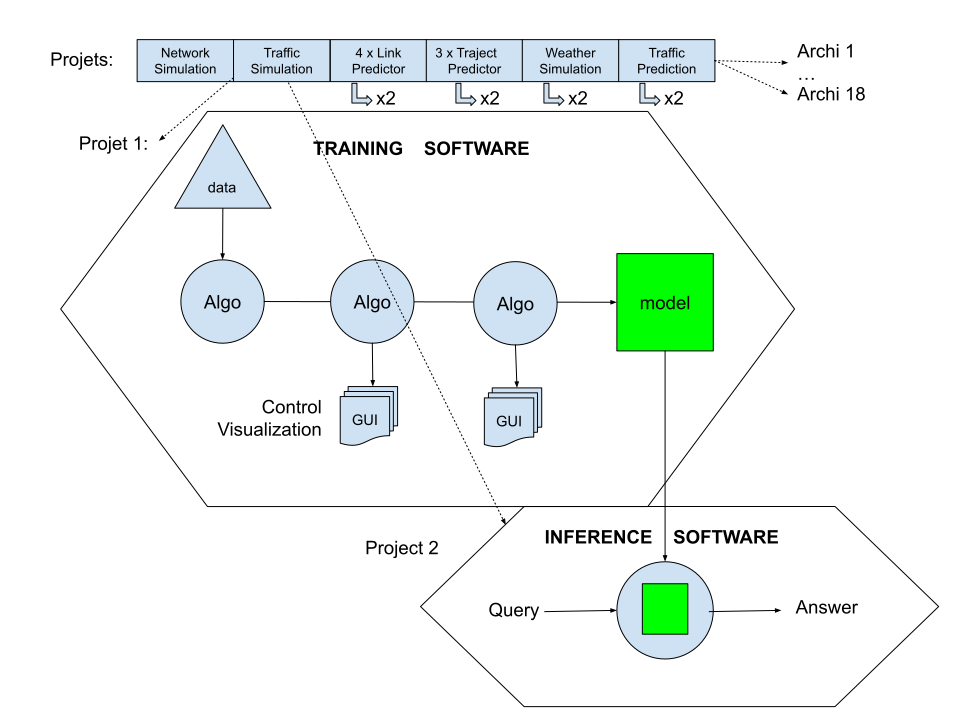
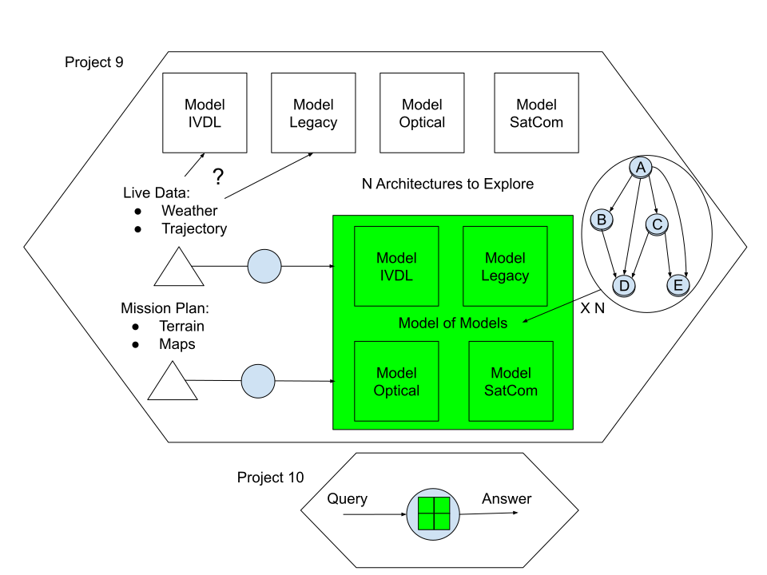

Introduction
Overview
Building robust models from data requires close collaboration between domain experts and data scientists. Once the algorithm is trained, the process becomes similar to standard engineering activities.

AGILab is a multi-project data science solution designed to manage projects using template-based frameworks. It also serves as a first step towards an experimental Python IDE for data science applied to engineering.
Remark: Historically agilab has been develop as a playground for agi-core, so to benefit from agi cluster automation functionality all you need is agi-core, for example in a notebook without graphic interface.
Purpose
AGILab aims to enhance data science productivity
Cross-Functional Collaboration in Data Science: Provide project templates, project import and export and project cloning facilities for code reuse which is enhancing productivity
Enhance Agility in AI Projects: Provide project scalability for both data and algorithms, so you don’t need to rework your code when the data size increase, which is enhancing productivity. Provide build in online and offline generative AI to assist algorithm discovery and coding assistance. This is also known as prompt engineering. This is also contributing to enhance productivity
Overcome IT Constraints: AGILab is auto deploying project on a cluster, so you don’t need devops skill which is also enhancing productivity
Target Audience
AGILab is intended for professionals and domain experts, offering a tool that simplifies AI project development.
Main Dependencies
uv: Advanced utilities to manage Python virtual environments.
asyncssh: Enabling SSHv2 protocol on top of the Python asyncio framework.
Cython: Cython is an optimising static compiler for both the Python programming language and the extended Cython programming language (based on Pyrex). It makes writing C extensions for Python as easy as Python itself.
Dask: Parallel computing for handling large datasets and computations.
Streamlit: Rapidly develop and deploy interactive applications.
Pycharm: Assist you for advanced code development with AGI.
OpenAI: Assist you for algorithm discovery and code generation.
Mistral (Universal Offline AI Chatbot): Provides local Mistral-instruct models for offline experimentation.
GPT-OSS Offline: Runs open-weight GPT-OSS responses locally so experimentation keeps working without external connectivity. Configure the assistant via the Streamlit sidebar or the GPT_OSS_ENDPOINT and GPT_OSS_MODEL environment variables (defaults to
http://127.0.0.1:8000/v1/responsesandgpt-oss-120b).
Note
Windows builds are still catching up. Features that rely on local assistants—such as the GPT-OSS offline coding helper—are only partially supported while the port is in progress.
Technologies Selection Criteria
The selection of these technologies have been done for Portability, Simplicity and Performances:
Portability: AGILab seamlessly run and share your environments across different systems without the overhead of full virtualization.
Simplicity: AGILab manage dependencies and isolate project environments easily, reducing complexity and potential conflicts.
Performance: AGILab provide runtime benchmark for combinaisons of Cython, Dask and Pool of Thread/Process execution modes
Example: Aircraft Radio Communication
Needs Algos Set
Today, a single algorithm is rarely enough to solve complex problems. Instead, a suite of algorithms is needed to address diverse use cases with intricate implementations. For example, consider telecom systems in an aircraft:
This scenario requires reuse across organizations, infrastructure, and operating systems. While many consider virtualization and containerization (e.g., Docker) as the solution, AGILab offers an alternative.
AGILab is designed for modern development needs—reducing overhead, promoting collaboration, and simplifying the deployment pipeline without compromising on power or flexibility.
Needs Model of Models
Since Artificial General Intelligence (AGI) has not yet been achieved with a single algorithm, a “model of models” is necessary. For instance, in aircraft radio communication, this approach is illustrated as follows:
AGILab provides a dynamic playground to experiment with various architectural solutions without reworking your code. This flexibility is achieved through two main mechanisms:
A versatile GUI that allows selection from 16 different execution modes.
A decoupling of software architecture from available hardware resources.